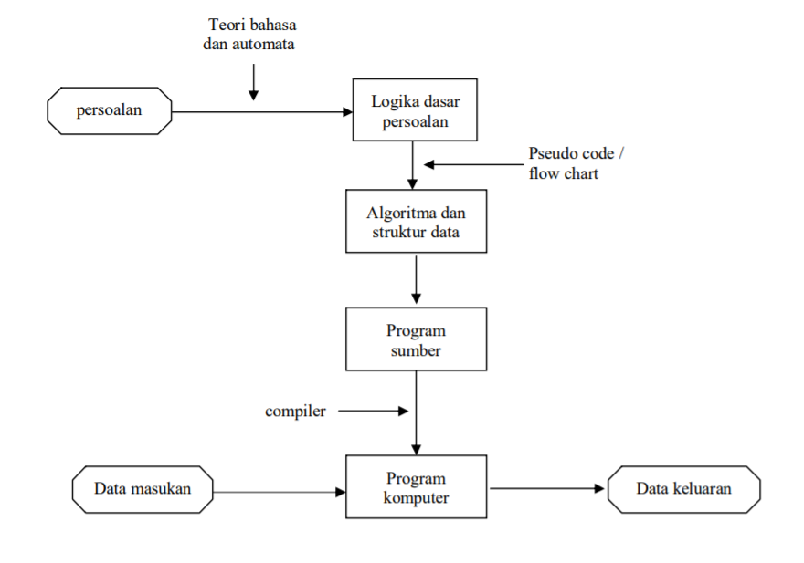
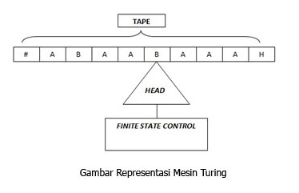

Teori bahasa membicarakan bahasa formal (formal language), terutama untuk kepentingan perancangan kompilator (compiler) dan pemroses naskah (text processor). Bahasa formal adalah kumpulan kalimat. Semua kalimat dalam sebuah bahasa dibangkitkan oleh sebuah tata bahasa (grammar) yang sama. Sebuah Bahasa formal bisa dibangkitkan oleh dua atau lebih tata bahasa berbeda. Dikatakan Bahasa formal karena grammar diciptakan mendahului pembangkitan setiap kalimatnya. Bahasa manusia bersifat sebaliknya; grammar diciptakan untuk meresmikan kata-kata yang hidup di masyarakat.
Automata adalah mesin abstrak yang dapat mengenali (recognize), menerima (accept), atau membangkitkan (generate) sebuah kalimat dalam bahasa tertentu.
Teori otomata mempelajari tentang mekanisme komputer abstrak atau mesin abstrak. Jauh sebelum ada komputer, tahun 1930, Alan Turing mempelajari mesin abstrak yang punya kemampuan seperti komputer sekarang, dikenal dengan nama Mesin Turing. Tujuan Turing adalah menggambarkan secara jelas apa yang dapat dan yang tidak dapat dilakukan mesin komputing. Kemudian pada tahun 1940 an dan 1950-an, ditemukan mesin abstrak yang lebih sederhana, yaitu “finite automata”. Automata ini, asalnya diperuntukkan untuk membentuk fungsi kecerdasan, berubah secara drastis untuk keperluan lain yang sangat beragam. Tahun 1950-an juga Chomsky mempelajari tentang “tata bahasa” formal, yang sangat berguna untuk pengembangan compiler.
Semua pengembangan teori ini secara langsung melahirkan ilmu-ilmu komputer yang sekarang ini. Beberapa konsepnya, seperti “Finite Automata” dan “grammar”, digunakan untuk perancangan dan pembuatan bermacam software penting, seperti Pascal dan C. Konsep lainnya, seperti Mesin Turing, membantu kita memahami apa yang dapat kita harapkan dari perangkat lunak kita.
Di dalam praktik teori bahasa dan otomata (tbo) terdapat beberapa pembelajaran yang diajarkan kepada mahsiswa seperti finite state automata, deterministic finite automata, nondeterministic finite automata, grammar, regular expression, mesin turing, dan lain-lain. Di dalam tbo juga dijelaskan juga teori tentang finite state machine (fsm) yang di dalamnya juga dijelaskan beberapa fungsi seperti fsm with output dan fsm with no output, dalam fsm with output dijelaskan dua fungsi yaitu meanly machine dan moore machine, dan juga dalam fsm with no output dijelaskan juga beberapa fungsi yaitu finite state automata, deterministic finite automata, non-deterministik finite sutomata, grammar. Yang sering digunakan dalam pembelajaran di teori dan di praktik adalah finite state machine with no output seperti finite state automata, deterministic automata, dan lain-lain.
Suatu teori hanya menarik jika dapat membantu dalam mencari solusi terbaik. Tanpa penerapan timbul pertanyaan, mengapa mempelajari teori? Teori memberikan konsep dan prinsip yang menolong untuk memahami perilaku dari suatu persoalan yang berkorelasi dengan teori tersebut. Bidang ilmu komputer meliputi topik yang luas, dari perancangan mesin sampai pemrograman. Disamping perbedaan yang ada, terdapat keseragaman prinsip-prinsip umum yang dipakai. Untuk mempelajari prinsip-prinsip dasar tersebut, kita mengkonstruksi suatu mesin otomata sebagai model abstrak dari komputer dan komputasi. Model ini memiliki fungsi-fungsi yang penting dan umum pada perangkat keras dan perangkat lunak komputer. Meskipun model tersebut sederhana untuk diterapkan langsung pada dunia nyata, keuntungan yang diperoleh dari mempelajarinya adalah memberikan landasan untuk basis dari suatu pengembangan algoritma. Pendekatan ini, juga diterapkan pada ilmu sains lainnya.
Mesin turing dapat diadaptasi untuk mensimulasi logika dari setiap algoritma oleh karena itu cara kerja mesin turing adalah ekivalen dengan cara kerja komputer sekarang ini dan mesin turing juga ekivalen dengan problema komputasi matematika. Mesin turing tidak ditujukan sebagai teknologi komputasi praktis tetapi lebih sebagai eksperimen pemikiran yang mewakili sebuah mesin komputasi. Mesin turing membantu para ilmuan komputer memahami batas-batas komputasi mekanis.
Sebagai input dari mesin turing adalah kata atau untai atas suatu alfabet T. Mesin turing berhenti dengan keadaan menerima atau menolak untai. Kadang-kadang terjadi pula perulangan atau looping tak terhingga.
Keterangan:
-Tape : Tempat diletakannya inputan yang berupa kata/untai
-Head: membaca dan menulisi sel pita mesin turing, bisa bergerak ke kiri atau ke kanan
-Finite StateControl (FSC) : otak dari TM, diimplementasikan dari algoritma pengenalan
kalimat